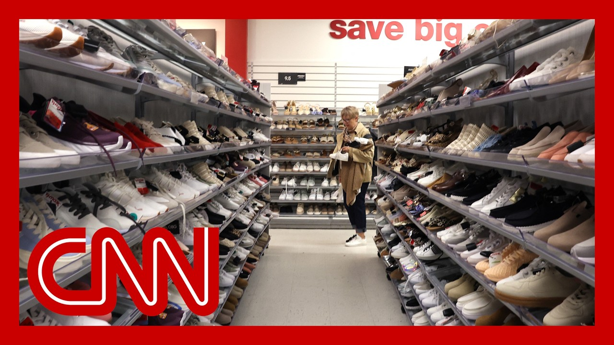

【特朗普关税的后果？经合组织称比此前预想的更糟】
Summary: A new OECD report sharply downgrades US growth forecasts, warns of global economic slowdown, and highlights stalled US-China trade talks, with tariffs posing an existential crisis for industries like footwear.
摘要： 经合组织最新报告大幅下调美国经济增长预期，警告全球经济放缓，并强调美中贸易谈判停滞，关税对鞋类等行业构成生存危机。

⏱️ Estimated Reading Time: 16 min
A new report out this morning from a key group of the world's 38 most wealthy nations sharply downgraded its current year growth forecast for the United States, going from the forecast for 2025 of 2.2% growth projected to now just 1.6% growth in March.
今晨，由全球38个最富裕国家组成的关键组织大幅下调了对美国今年的增长预期，从2025年预测的2.2%降至3月预测的1.6%。
The group adding further dismal projections for the future.
该组织对未来进一步给出了黯淡的预测。
And they expect the global economy to slow markedly both this year and next.
他们预计今年和明年全球经济将显著放缓。
A big part of what decides that the currently stalled trade talks between the United States and China, those negotiations are a huge focus as well.
其中关键因素是目前停滞的美中贸易谈判，这些谈判也是焦点所在。
For one industry in particular, footwear.
尤其对鞋类行业而言。
Calling tariffs an existential crisis and trying to hold on to hope from recent comments made by President Trump like this.
他们将关税称为生存危机，并试图从特朗普总统最近的言论中寻找希望。
We're not looking to make sneakers and t shirts that we want to make military equipment.
我们不想生产运动鞋和T恤，而是想制造军事装备。
We want to make big things.
我们想制造大件产品。
We want to make do the AI thing with the computers and the, many, many, many, many elements.
我们想用计算机和众多元素发展人工智能。
But the textile, you know, I'm not looking to make T-shirts, to be honest.
但说实话，我对生产T恤不感兴趣。
I'm not looking to make socks.
我也不想生产袜子。
We could do that very well in other locations.
我们可以在其他地方做得很好。
Joining me right now is Matt Priest.
现在与我连线的是马特·普里斯特。
He's a president and CEO of the Footwear Distributors and Retailers of America, leading footwear trade group that represents dozens of companies like Nike and Crocs.
他是美国鞋业分销与零售商协会的主席兼CEO，该协会代表耐克、卡骆驰等数十家鞋业公司。
Thanks for being here.
感谢您的到来。
I've checked we've kind of been checking in with you throughout from before they all the tariffs were imposed to all throughout this very long and not yet their journey.
我们一直在关注您的动态，从关税实施前到这段漫长且未结束的历程。
You sent a letter to the White-- to the administration about those remarks, applauding hearing that the president isn't interested in maybe pushing you to try to manufacture companies to manufacture in the United States right now and asking for an exemption for the footwear industry from the reciprocal tariffs.
您就这些言论向白宫致信，对总统无意迫使企业在美国生产表示赞赏，并请求豁免鞋业行业的互惠关税。
Have you heard anything back?
您收到回复了吗？
We've not heard anything back, Kate.
我们尚未收到回复，凯特。
But this started a process back in January where we asked the president to exempt us.
但这一进程始于1月，当时我们请求总统豁免我们。
We've been concerned about these tariffs.
我们一直担心这些关税。
We pay billions of dollars in tariffs anyway.
我们已支付了数十亿美元的关税。
Right. We have for 100 years.
没错。一百年来都是如此。
So for us we wanted to encourage as he made that statement that, yes, the policy should actually line up with the rhetoric.
因此，我们希望借此声明鼓励政策与言论一致。
Stop terrifying and taxing Americans on their on shoes and socks and t shirts, as the president said, and focused more on those strategic industries.
如总统所说，别再让美国人为鞋袜和T恤担惊受怕并缴税，而应更关注战略行业。
Look, I mean, the fact matter is tariff rates have not changed, right?
问题是关税税率并未改变，对吧？
They're still on.
它们仍在实施。
They're still going to hitting the industry and going to hit the industry.
它们将继续冲击行业。
What happens if things do if you do not get the exemption?
如果未获豁免会怎样？
What happens in the industry?
行业会如何？
Costs will go up.
成本将上升。
This inevitable fact.
这是不可避免的事实。
Fact.
事实如此。
We're here this week in a big market week in New York.
本周我们在纽约参加大型市场周活动。
We have four times a year.
我们每年举办四次。
All the conversations around what are we going to do for costing for products sold in 2026?
所有讨论都围绕2026年产品的成本定价。
And no one knows.
但无人知晓。
None of our brands or retailers know how they're going to be able to price goods in this environment.
我们的品牌或零售商都不知道如何在这种环境下定价。
When you're not sure what the tariff for the tax at the border is going to be.
当你不确定边境关税税率将是多少时。
Is the uncertainty worse or is the tariff rate worse?
不确定性和税率哪个更糟？
The uncertainty is typically worse.
不确定性通常更糟。
Now, when you're at 145 154% tariff, which we saw just a few weeks ago.
比如几周前出现的145%至154%关税。
Yeah, that's an embargo.
那简直是禁运。
So that's that's obviously terrible.
显然非常糟糕。
But if you're just not knowing where the tariff rate is going to land, between 30%, 15%, 10%, then that uncertainty makes it very difficult to understand how to cost US goods.
但如果你不知道税率会落在30%、15%还是10%，这种不确定性会让美国商品的成本核算变得极其困难。
Have prices gone up?
价格上涨了吗？
No.
没有。
Prices have not gone up right now.
目前价格尚未上涨。
In fact, we're in this this era where they're pretty muted.
事实上，目前价格相当平稳。
And that's our big concern is because even with prices not up at this moment, because the tariffs haven't had a full impact on on the cost of goods, our consumers have pulled back.
我们最担心的是，尽管目前价格未涨（因关税尚未完全影响商品成本），消费者已开始缩减开支。
And so we see declining sales.
因此我们看到了销量下滑。
So our concern is that as prices go up that's going to tamp down on consumer demand.
所以我们担心，价格上涨会抑制消费者需求。
And so what's going to happen when those prices do go up particularly at back to school holiday.
那么当价格真的上涨时，尤其是在返校季和假日季，会发生什么？
So that's becomes a big question right?
这成了一个大问题，对吧？
I mean we let's ask this in kind of like in two buckets what this means for American business, American footwear companies and what this means for the American consumer.
我们可以从两方面来看：这对美国企业、美国鞋业公司意味着什么，以及对美国消费者意味着什么。
If if nothing changes.
如果一切照旧。
And that's the only thing you can work with when it comes to reciprocal tariffs.
在互惠关税问题上，这是唯一可预测的情况。
What is that going to mean for anyone who is out there shopping?
这对购物者意味着什么？
I in the letter you mentioned that I would read that the average American spending on average 30 to $50 on when they're buying shoes.
您在信中提到，美国人买鞋平均花费30至50美元。
What is that going to mean for people when they're doing Back-To-School shopping?
这对他们的返校购物意味着什么？
It's going to be higher costs, of course.
当然是更高的成本。
And the bigger concern is this is on everything.
更令人担忧的是这适用于所有商品。
So even if we think that we are recession proof as an industry, we know that because costs and tariffs have gone up on every single consumer goods sold in this country, the discretionary income right at the stretch of the dollar for the American consumer is going to start to shrink back.
即使我们认为行业抗衰退，但由于该国所有消费品的成本和关税上涨，美国消费者的可支配收入将开始缩水。
And so that's going to.
因此这将导致……
What's the estimate that you're hearing from companies from Nike to Crocs to I mean, you represent all big names in the industry.
您从耐克、卡骆驰等公司听到了怎样的预估？您代表行业所有大品牌。
If things don't change, how what what is it going to go up by?
如果情况不变，价格将上涨多少？
I mean, I just had the CEO of Elf Beauty Cosmetics on last week, and they are planning on raising their products, each product by a dollar starting August 1st.
比如上周精灵美容化妆品CEO表示，计划从8月1日起每件产品涨价1美元。
What are you hearing?
您听到了什么？
How much are companies saying they fear they're going to have to raise prices by.
公司预计将涨价多少？
Yeah.
是的。
So every company's different.
每家公司情况不同。
They're all in a different part of our market.
它们处于市场的不同领域。
But in a general sense we're looking at 15 to 20% to cover.
但总体来看，预计涨幅在15%至20%。
And so you think of multiply that across Elf products, footwear, toys, etc. that's going to have a compounding effect on the consumer.
想象一下精灵产品、鞋类、玩具等的叠加效应，这对消费者将是复合影响。
You mentioned that this in you also said that this is an existential crisis for American footwear companies.
您提到这是美国鞋业公司的生存危机。
How many or how many companies are you hearing from that this could put them out of business.
您听说多少公司可能因此倒闭？
A lot.
很多。
And what the viewers need to understand, Kate, is that even if you're buying product at a big box retailer that you see is publicly traded and you think they're worth billions of dollars, a lot of the suppliers and vendors that sell into those markets, that sell brands that people know and love, our small, family owned business.
观众需要明白，凯特，即使你从市值数十亿美元的上市大型零售商处购买产品，许多向这些市场供应知名品牌的供应商是小型家族企业。
Why can't the companies eat the tariffs like Donald Trump says?
为何企业不能像特朗普说的那样消化关税？
You should be able to.
本应可以。
Because the margins are two, three, 4% at best.
但利润率最多只有2%、3%或4%。
And so we have one company, New York based third generation, $1 million worth of goods every single month.
比如纽约一家三代经营的公司，每月货物价值100万美元。
Their duty bill used to be $60,000.
过去关税账单是6万美元。
It's now $360,000 a month.
现在每月36万美元。
Anyone?
谁能承受？
It's mind blowing.
令人震惊。
It is mind blowing.
确实令人震惊。
It puts into perspective what the impact could be.
这让人看清潜在影响。
Matt, it's good to have you here.
马特，感谢您的到来。
Thank you very much.
非常感谢。
My pleasure.
我的荣幸。
Really appreciate it.
非常感谢。
Please let us know if what you hear back.
如有回复请告知我们。
I'm sure we will also hear from Donald Trump.
相信我们也会听到特朗普的回应。
Social media.
通过社交媒体。
If you hear back from the administration on this.
如果您收到政府回复。
Thank you.
谢谢。
President Trump's new ramped up tariffs on steel imports are set to take effect tomorrow, and the president is vowing to double the tariff in an effort to revitalize U.S. manufacturing.
特朗普总统对进口钢铁的新加关税将于明日生效，他誓言将关税翻倍以重振美国制造业。
The decision sent steel stocks sharply higher to start the week, but there's more seen as many contracting this one for us.
这一决定推动钢铁股本周初大幅上涨，但影响远不止于此。
What did the steel industry saying about this?
钢铁行业对此有何看法？
Well, the steel industry is loving it, right, because the president is essentially tripling down on using his favorite weapon tariffs to revive the Rust Belt.
钢铁行业非常支持，因为总统正加倍利用他最爱的关税武器重振锈带。
So we did see steel stocks skyrocket yesterday.
昨天钢铁股确实飙升。
We saw a 10% gain for Nucor, 10% gain for Steel Dynamics, Cleveland Cliffs 23% increase yesterday.
纽柯钢铁和钢铁动力上涨10%，克利夫兰克里夫斯涨幅达23%。
And that was the biggest one day increase for that stock in almost a decade.
这是该股近十年来最大单日涨幅。
And just to remind you of where we are on steel tariffs because it's a little confusing.
回顾一下钢铁关税现状（因有些混乱）：
The president did put a 25% tariff on steel in February.
总统2月对钢铁征收25%关税。
And then on Friday he vowed to double it to 50% starting tomorrow.
上周五他宣布从明天起翻倍至50%。
And look, he's got a point here.
他确实有道理。
The steel industry is certainly in decline, right.
钢铁行业确实在衰退。
Production is down massively.
产量大幅下降。
Employment is down dramatically from where it was.
就业人数急剧减少。
This has really been very painful for a lot of communities.
这对许多社区非常痛苦。
And look at us steel.
看看美国钢铁公司。
It used to be the most valuable company on the planet.
它曾是全球最具价值的公司。
Now it's kind of a struggling afterthought in this modern economy.
如今在现代经济中已是挣扎的次要角色。
And analysts do say that 50% steel tariffs, if they stick, which is a big if.
分析师认为50%钢铁关税若持续（尚不确定）
But if they did, that could encourage more steel production in the United States.
或能促进美国钢铁生产。
But here's the problem.
但问题是：
It's also expected to increase prices of steel.
钢铁价格也将上涨。
And the ironic part here is that there's more people who work at companies that use steel as an input than who actually work in the steel industry itself.
讽刺的是，以钢铁为原料的企业雇员远多于钢铁行业本身。
Obviously, autos is the big example here, right?
汽车业就是典型例子。
We saw auto stocks fall yesterday because they use steel.
昨天汽车股因使用钢铁而下跌。
And now their input costs are going to go higher.
现在它们的投入成本将上升。
A former Obama of economic official Larry Summers and Clinton Treasury secretary.
奥巴马政府经济官员、克林顿政府财长拉里·萨默斯
He's warning that these steel tariffs will backfire.
警告钢铁关税将适得其反。
Take a listen to what he said yesterday.
听听他昨天的发言：
That effect of this is going to be to destroy manufacturing jobs.
这将摧毁制造业岗位。
The net effect of this is going to be to push up consumer prices to make, for example, our automobile industry less competitive than it would otherwise, be.
最终会推高消费价格，削弱汽车业竞争力。
This is, ready, fire, aim kind of, policy.
这是"先开枪后瞄准"的政策。
It is doesn't follow from any kind of coherent economic logic.
不符合任何连贯的经济逻辑。
And given how volatile the tariff strategy has been, summers also said he thinks it's extremely unlikely that this is really going to persuade companies to move production back to the United States, and we don't need to look back that far in history to see how this can go.
鉴于关税策略反复无常，萨默斯认为这极不可能说服企业将生产迁回美国，历史经验也印证这点。
Back in 2018, the president did put steel tariffs in place.
2018年总统确实实施了钢铁关税。
And research does show that steel employment did go up, but only slightly by 1000.
研究显示钢铁就业仅微增1000人。
And look at this manufacturing jobs at companies that use steel went down by 75,000.
而使用钢铁的制造业岗位减少了7.5万个。
Is that's telling it.
这很能说明问题。
That's a. Right. That's a graphic.
这是，没错。这是鲜明对比。
That's something to pay attention.
值得注意。
If we don't know how it's going to work this time.
我们不知道这次会如何。
Kate.
凯特。
But I don't know if they're going to stay in place.
但不确定关税会否持续。
I mean, the the uncertainty of it all for.
这种不确定性...
More than a few hours.
甚至持续不了几小时。
We don't we don't really know.
我们真的不知道。
Right. But history does show that this can be a risky strategy.
是的。但历史表明这是高风险策略。
Risky?
高风险？
I would say so.
确实如此。
It's good to say thank you.
感谢讨论。